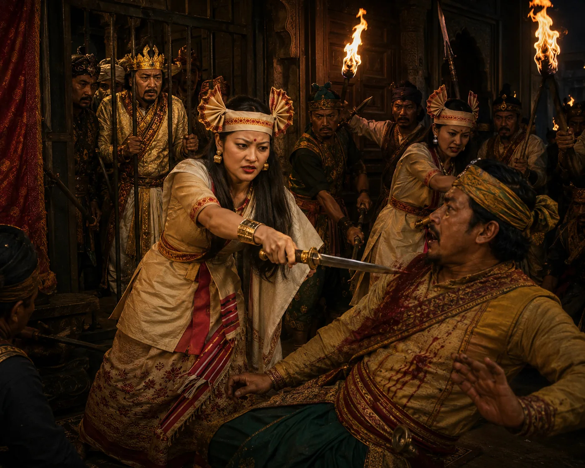

Queen Kuranganayani's Daring Counter-Coup
April 1770 (Bihu Eve) · The Moamoria risings

During Rongali Bihu, Queen Kuranganayani bravely strikes down the usurper Ragha Moran with a sword blow from behind; loyalist nobles storm the palace and liberate King Lakshmi Singha.
Sources have not yet been catalogued for this record.
People: Kuranganayani, Lakshmi Singha (Sunyeophaa), Ragha Neog (Raghab Borbarua)
Open this scene in the interactive archive · Follow this event on MAP